← All chapters
The slides
The same story, in 16 slides.
Built from the same words, charts and drawings as the website. Present full screen, open the presenter view with speaker notes, or download the PDF.
All 16 slides
 1 · From neurons to next stepsan ASDRP neuroscience portfolio by Amishi Mehta, with the four-card collage.
1 · From neurons to next stepsan ASDRP neuroscience portfolio by Amishi Mehta, with the four-card collage.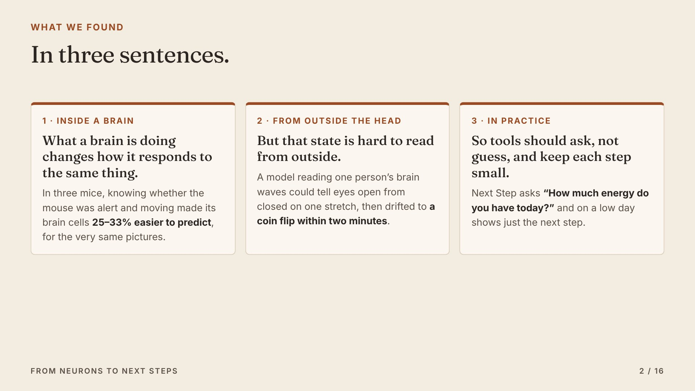
2 · What we found, in three sentencesstate changes how a brain responds; it is hard to read from outside; so tools should ask and keep steps small.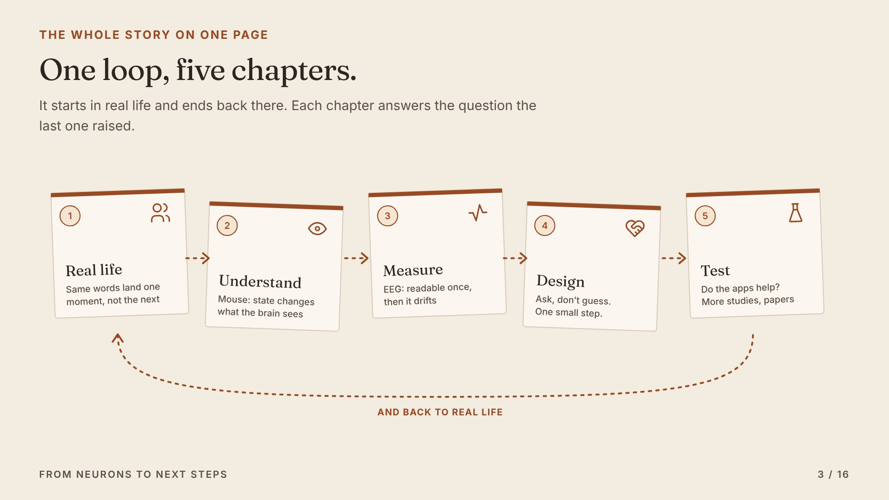
3 · The loopreal life, understand, measure, design, test, and back to real life.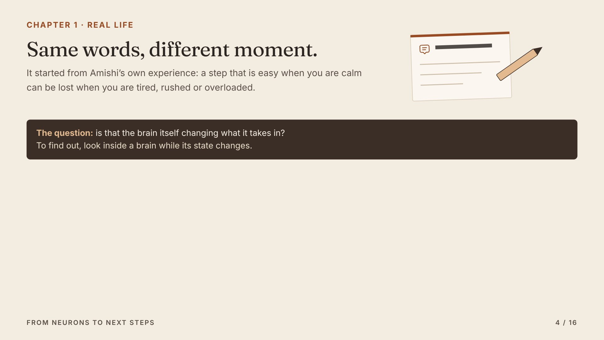
4 · Chapter 1, real lifesame words, different moment.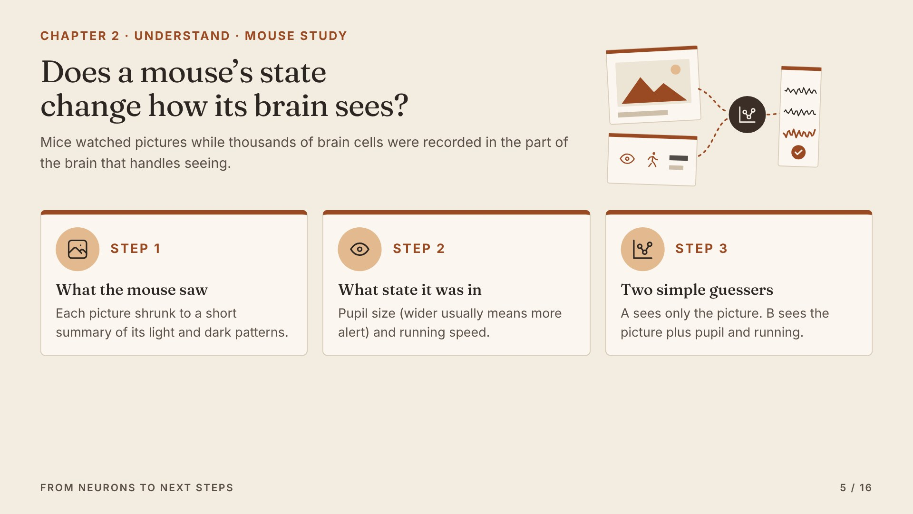
5 · Chapter 2how the mouse study works, in four steps.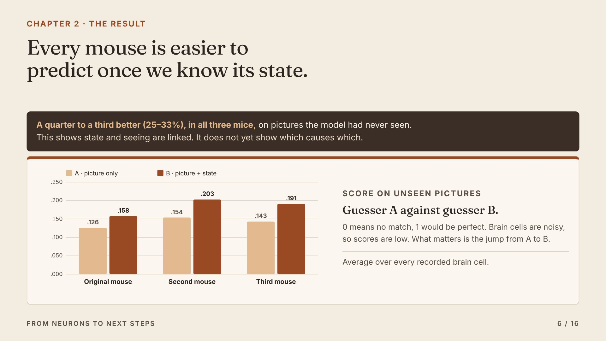
6 · Chapter 2 resultguesser B beats guesser A in all three mice.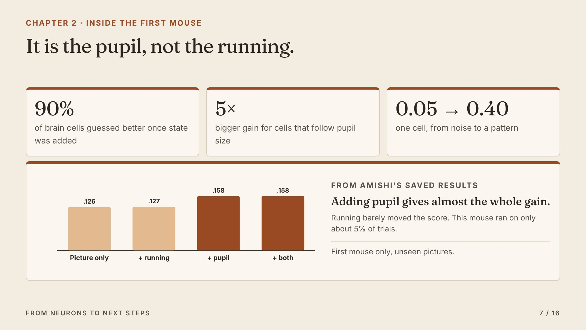
7 · Inside the first mouseit is the pupil, not the running, and 90% of brain cells gain.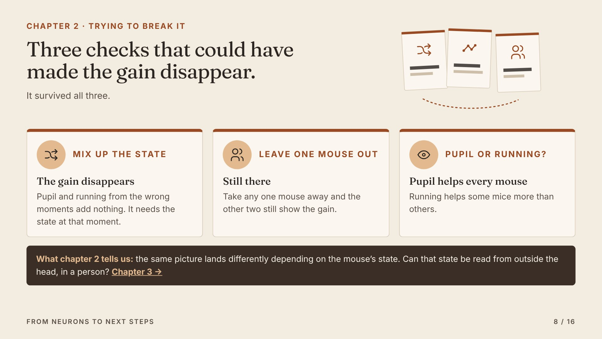
8 · Chapter 2 checksmix up the state, leave one mouse out, pupil or running.- 9 · Chapter 3how the EEG study works.
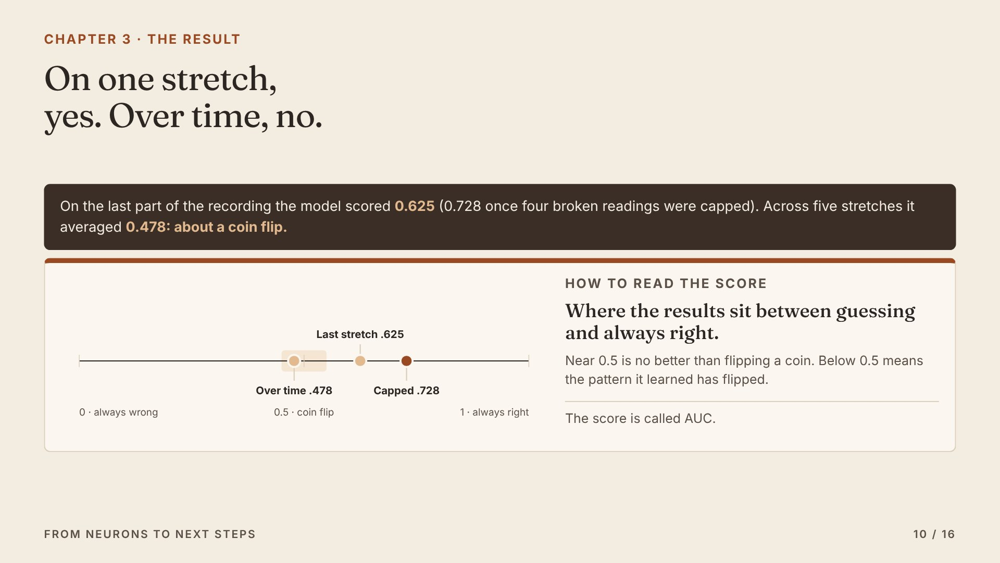
10 · Chapter 3 resultgood on one stretch, a coin flip over time.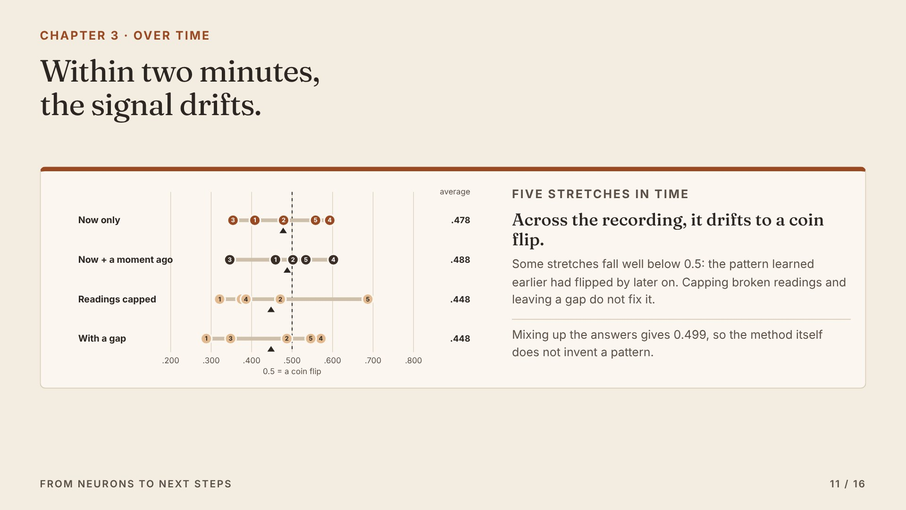
11 · Chapter 3scores on five stretches scatter around a coin flip.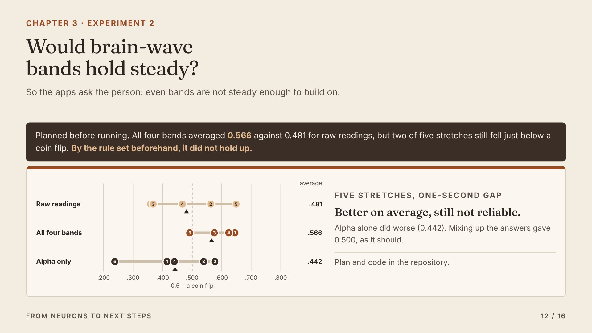
12 · Experiment 2brain-wave bands help on average but still dip below a coin flip.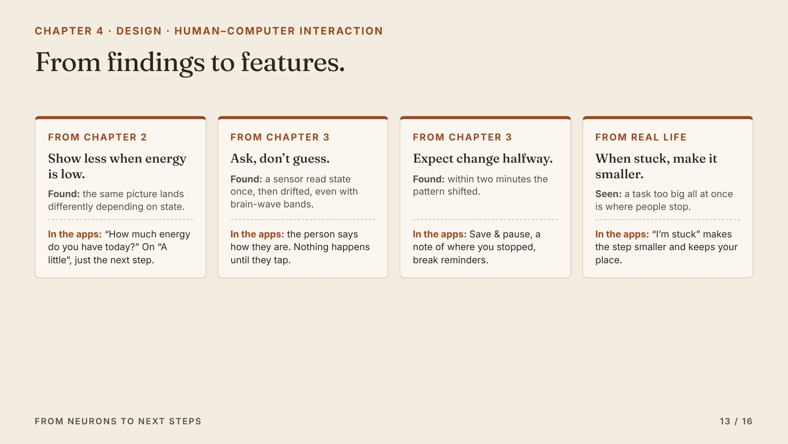
13 · Chapter 4four findings become four design rules.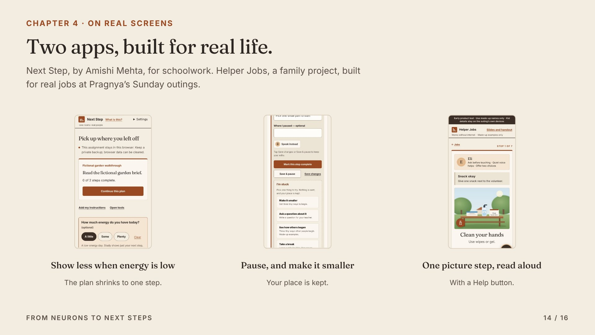
14 · Chapter 4the rules on real screens in Next Step and Helper Jobs.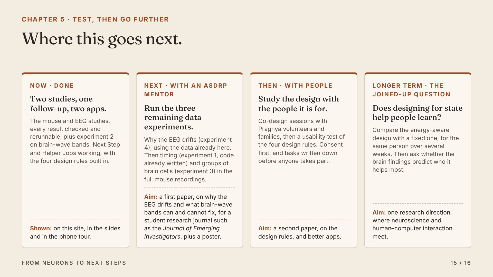
15 · Chapter 5the road ahead in four steps.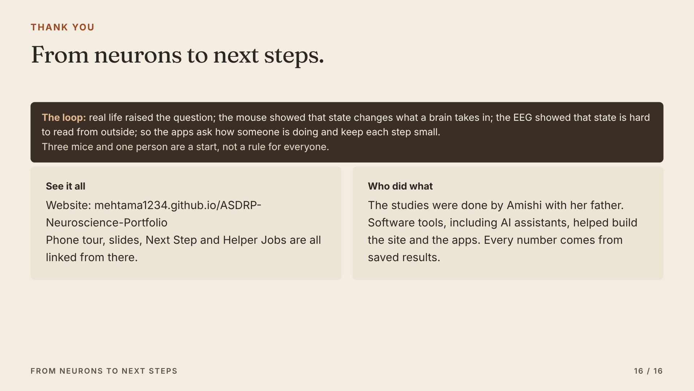
16 · The loop, who did what, and where to see everything.The loop, who did what, and where to see everything.